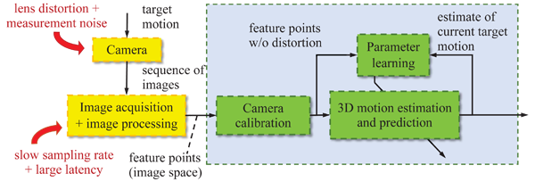
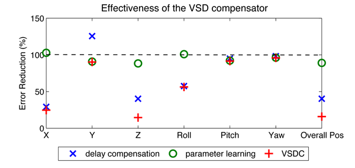

Vision Sensing Dynamics Compensation (VSDC)
Motivation and Approach
In order to compensate for the large feedback time delay, slow sampling rate, lens distortion, and measurement noise in industrial machine vision systems, a target motion (i.e., position and orientation) estimation scheme (blue shaded area), Vision Sensing Dynamics Compensation (VSDC) scheme, is developed.
- A look-up table was built (green shaded area "Camera calibration") to map the feature information (contaminated by the lens distortion) from the sensing plane to a virtual plane where the nonlinear eff ects are fully corrected [1].
- A Kalman filter based state estimator was designed (green shaded area “Motion estimation and prediction”) to provide a real-time state feedback (i.e., target motion in Cartesian space) via delayed measurements in the image space.
- The observer was optimized (model and gains, green shaded area “Parameter learning”) to improve the estimation results.

Main Results
- Learning target motion characteristics: combining the motion estimation block and the parameter learning block as an incomplete data Maximum Likelihood estimation problem [2].
- VSDC in Position based visual servoing (PBSV): application to the multiple-marker-single-camera con guration.

Above figure: the proposed VSDC scheme greatly improves the estimation results by both compensating for the sensor dynamics (i.e., delay compensation) and correctly modeling the target motion characteristics (i.e., parameter learning)
Recent Key Publications
- C. Wang, W. Chen, and M. Tomizuka, "Robot End-eff ector Sensing with Position Sensitive Detector and Inertial Sensors," in Proceedings of the 2012 IEEE International Conference on Robotics and Automation (ICRA), pp. 5252-5257, 2012
- C.-Y. Lin, C. Wang, and M. Tomizuka, "Visual tracking with sensing dynamics compensation using the Expectation-Maximization algorithm," in Proceedings of the 2013 American Control Conference (ACC), Washington, DC, June 17-19, 2013
- C. Wang, C.-Y. Lin, and M. Tomizuka, "Visual Servoing Considering Sensing Dynamics and Robot Dynamics," in Proceedings of the 6th IFAC Symposium on Mechatronic Systems, pp. 45-52, 2013 (Best Student Paper Finalist)
- C. Wang, C.-Y. Lin, and M. Tomizuka, "Visual Servoing for Robot Manipulators Considering Sensing and Dynamics Limits," in Proceedings of the Sixth ASME Dynamic Systems and Control Conference (DSCC), 2013